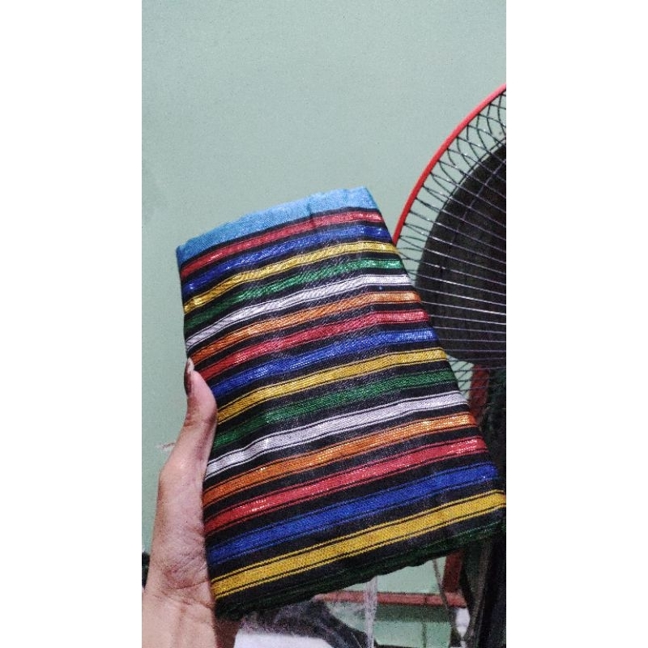

Ragam Motif Khas

Rp"65 000"
Beli di ShopeeMotif Kasopa
Motif tradisional yang didominasi oleh warna-warna berani. Biasanya digunakan dalam upacara adat atau pesta perkawinan masyarakat Wakatobi.

Rp.72.000-80.000
Beli di ShopeeMotif Kumbaea
Memiliki ciri khas perpaduan warna yang lebih lembut namun tetap mempertahankan pola geometris garis horizontal dan vertikal yang tegas.

Motif Leja Utama
Desain klasik dengan benang emas/perak pilihan yang melambangkan kemewahan, kehormatan, dan status sosial bagi pemakainya.

Rp.80.000
Beli di Shopeeleja wolio
Leja Wolio (Leja Bangsawan): Jenis tenunan leja yang khusus dipakai oleh keluarga kerajaan atau golongan bangsawan tinggi. Ciri khasnya menggunakan motif garis horizontal dengan warna dasar hitam yang pekat, serta kerap memadukan benang emas atau perak halus untuk menunjukkan kemewahan

Rp.180.000
Beli di ShopeeSobi Kaubarasa Liya
Kain tenun premium Liya yang menggunakan teknik sulam/pola timbul khas.

Rp.180.000
Beli di ShopeePerahu Layar
Sarung tenun Wakatobi dengan motif perahu (atau motif bertema maritim/kelautan) merupakan salah satu identitas budaya paling penting bagi masyarakat Kepulauan Wakatobi, Sulawesi Tenggara.